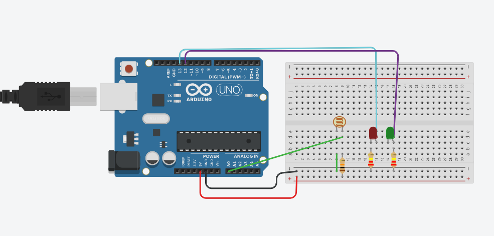
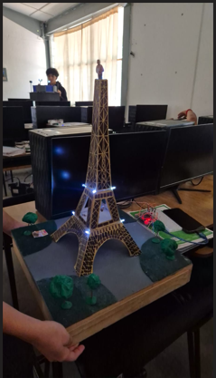

Fotoresistencia (LDR)
Control de Iluminación
Sistema automático de iluminación que utiliza una fotoresistencia (LDR - Light Dependent Resistor) para detectar la cantidad de luz ambiental y controlar LEDs en función de las condiciones de luminosidad.


¿Qué es una Fotoresistencia?
Una fotoresistencia o LDR (Light Dependent Resistor) es un componente electrónico cuya resistencia eléctrica varía en función de la cantidad de luz que incide sobre él.
- Con mucha luz: La resistencia disminuye (puede bajar a ~100Ω)
- Con poca luz: La resistencia aumenta (puede llegar a ~1MΩ)
- Principio: Efecto fotoeléctrico - los fotones liberan electrones
- Material: Sulfuro de cadmio (CdS) u otros semiconductores
Cómo Funciona el Circuito
El circuito crea un divisor de voltaje con la fotoresistencia y una resistencia fija de 10kΩ. Arduino lee el voltaje en el punto medio a través de un pin analógico.
Proceso de funcionamiento:
- Divisor de Voltaje: LDR + Resistencia 10kΩ conectadas entre 5V y GND
- Lectura Analógica: Arduino lee el voltaje en el pin A0 (0-1023)
- Procesamiento: El código compara el valor con un umbral definido
- Acción: Si hay poca luz (valor alto), enciende los LEDs automáticamente
Fórmula del divisor de voltaje:
V_out = V_in × (R2 / (R1 + R2))
Donde R1 es la LDR y R2 es la resistencia de 10kΩ. Cuando oscurece, la LDR aumenta su resistencia, aumentando el voltaje leído en A0.
Componentes del Circuito
- Arduino UNO: Microcontrolador que lee el sensor y controla los LEDs
- Fotoresistencia (LDR): Sensor de luz variable (típicamente 5-10mm)
- Resistencia 10kΩ: Para formar el divisor de voltaje con la LDR
- LEDs: Rojo, amarillo y verde para indicación visual (como en el proyecto de la Torre Eiffel)
- Resistencias 220Ω: Una por cada LED para limitar corriente
- Protoboard y cables: Para realizar las conexiones
Código de Ejemplo
Este es un ejemplo básico de cómo programar Arduino para que encienda LEDs cuando detecte oscuridad:
// Definir pines
const int pinLDR = A0; // Pin analógico para LDR
const int ledRojo = 9; // LED rojo
const int ledVerde = 10; // LED verde
const int ledAmarillo = 11; // LED amarillo
int valorLuz;
int umbral = 500; // Ajustar según necesidad
void setup() {
pinMode(ledRojo, OUTPUT);
pinMode(ledVerde, OUTPUT);
pinMode(ledAmarillo, OUTPUT);
Serial.begin(9600);
}
void loop() {
valorLuz = analogRead(pinLDR);
Serial.println(valorLuz); // Monitorear valor
if (valorLuz > umbral) {
// Está oscuro - encender LEDs
digitalWrite(ledRojo, HIGH);
digitalWrite(ledVerde, HIGH);
digitalWrite(ledAmarillo, HIGH);
} else {
// Hay luz - apagar LEDs
digitalWrite(ledRojo, LOW);
digitalWrite(ledVerde, LOW);
digitalWrite(ledAmarillo, LOW);
}
delay(100);
}Aplicaciones Prácticas
- Iluminación Automática: Luces que se encienden al anochecer (como en el proyecto de la Torre Eiffel)
- Farolas Inteligentes: Alumbrado público que se activa según luz ambiental
- Sistemas de Ahorro Energético: Apagar pantallas o luces cuando hay suficiente luz natural
- Alarmas de Seguridad: Detectar cuando alguien tapa un sensor de luz
- Robots Seguidores de Luz: Robots que se mueven hacia la fuente de luz
- Cortinas Automáticas: Sistemas que cierran cortinas según la intensidad solar
Consejos y Calibración
Para calibrar correctamente tu circuito:
- Monitor Serial: Usa Serial.println() para ver los valores que lee la LDR
- Ajustar Umbral: El valor de umbral depende de tu ambiente. Prueba en diferentes condiciones
- Posicionamiento: Coloca la LDR donde reciba luz ambiental, no luz directa del LED
- Histéresis: Implementa dos umbrales (encendido y apagado) para evitar parpadeos
- Protección: La LDR no tiene polaridad, puede conectarse en cualquier dirección
- Tiempo de Respuesta: Las LDR tienen respuesta lenta (~100ms), considera esto en tu código